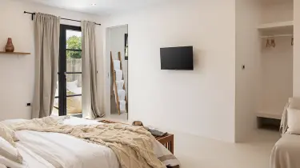
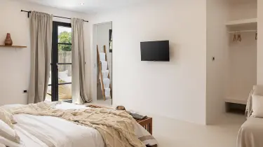

Jak se vytváří dekorativní stěrka
Dekorativní stěrka je stále populárnějším materiálem pro interiérovou výzdobu a renovace. Je to všestranný materiál, který může změnit vzhled místnosti a přidat jí osobitý a luxusní nádech. Dekorativní omítky jsou dostupné v různých texturách, barvách a vzorech, což umožňuje vytvořit jedinečné designové prvky ve vašem domě.
Proces tvorby dekorativní omítky je zručným uměním, které vyžaduje pečlivou práci a znalost materiálů. Zde je podrobnější pohled na to, jak vzniká tato krásná a praktická vrstva na stěnách:
Výběr surovin
Tvorba dekorativní omítky začíná výběrem kvalitních surovin. Základními složkami jsou vápno, cement, písek a pigmenty. Vápno dodává omítce měkkost a přirozený matný lesk, zatímco cement zajišťuje pevnost a odolnost. Písek se používá pro dosažení požadované textury a pigmenty dodávají omítce barvu.
Míchání
Suroviny se smíchají ve správném poměru podle receptury. Míchání je klíčovým krokem, protože toto určuje konzistenci omítky. Profesionální stěrkaři mají zkušenosti s tímto procesem a dokáží dosáhnout optimálního směsi.
Aplikace
Při nanášení omítky se používají různé techniky, včetně hladkého povrchu, texturovaného povrchu a různých vzorů. stěrka se aplikuje na připravený povrch stěny nebo stropu a následně se modeluje do požadovaného designu. Tento proces vyžaduje pečlivost a preciznost, aby se dosáhlo optimálního výsledku.
Vysychání a finišování
Po aplikaci musí stěrka vyschnout, což může trvat několik dnů. Během tohoto procesu může být stěrka ještě upravována a finišována. To zahrnuje broušení, čištění a v případě potřeby další úpravy, aby byl dosažen požadovaný vzhled.
Charakteristika a výhody dekorativní omítky
Dekorativní stěrka má několik významných výhod, které ji činí oblíbenou volbou pro interiérovou výzdobu. Patří sem:
- Estetika: Dekorativní stěrka umožňuje vytvářet různé textury a vzory, což přidává prostoru jedinečný vzhled.
- Trvanlivost: Správně nanesená dekorativní stěrka je trvanlivá a odolná proti poškození.
- Regulace vlhkosti: stěrka může pomoci regulovat vlhkost v místnosti a zlepšit kvalitu vzduchu.
- Izolační vlastnosti: Některé druhy dekorativní omítky mohou sloužit i jako izolace proti teplu a zvuku.
Růst popularity dekorativní omítky v Evropě a ve světě
Dekorativní stěrka zaznamenává stále rostoucí popularitu nejen v Evropě, ale i ve světě. To lze přičítat nejen estetickým výhodám, ale také ekologickým a trvanlivým vlastnostem tohoto materiálu. Lidé se stále více zajímají o ekologické a udržitelné materiály pro své domovy, což přispívá k rostoucí poptávce po dekorativní omítce.
Novacolor - výběr profesionálů
Novacolor je italským výrobcem dekorativních materiálů a stojí za svou pověstí kvality a inovace. Tato renomovaná firma nabízí širokou škálu dekorativních omítek a nátěrových hmot, které jsou oblíbeny mezi profesionálními designéry a řemeslníky po celém světě. Co dělá Novacolor tak výjimečným?
Inovace a design
Novacolor se věnuje neustálému vývoji nových produktů a designových možností. Jejich omítky a barvy jsou moderní a umožňují kreativní výrazy v interiérovém designu.
Ekologická odpovědnost
Firma Novacolor klade velký důraz na ekologickou udržitelnost svých produktů. Jejich omítky jsou často vytvářeny s ohledem na životní prostředí a zdraví lidí.
Profesionální podpora
Novacolor poskytuje profesionální školení a podporu svým zákazníkům. To znamená, že i když jste amatér, můžete dosáhnout profesionálních výsledků při práci s jejich produkty.
Dekorativní stěrka na zeď od Novacolor je synonymem pro kvalitu a inovaci. Pokud hledáte profesionální materiály pro své projekty, Novacolor je jedním z nejlepších výběrů, který vám umožní dosáhnout vynikajících výsledků ve svém interiérovém designu.
Závěr
Dekorativní stěrka je více než jen stavební materiál; je to umělecký prvek, který může změnit vaši místnost do prostoru plného elegance a krásy. Její trvanlivost, estetické vlastnosti a ekologické aspekty ji činí výjimečnou volbou pro každý interiér.
Společnost Novacolor je jedním z předních hráčů v tomto odvětví a nabízí širokou škálu inovativních produktů pro ty, kdo chtějí přinést něco výjimečného do svého domova. Nechte se inspirovat a zkuste dekorativní omítku jako součást svého dalšího projektu na výzdobu interiéru.


 
